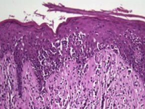

General information only. It does not replace advice from your care team and should not be used to choose a treatment.


At a glance
| How common | Second most common group of extranodal lymphomas |
| Types | T-cell (75%): mycosis fungoides, Sézary syndrome, CD30+ disorders; B-cell (25%) |
| Appearance | Itchy red patches, plaques or tumours; sometimes the whole body reddened |
| Treatment | Creams, phototherapy, radiotherapy; mogamulizumab, brentuximab, transplant in advanced cases |
Main types
- Mycosis fungoides: the most common. It begins as pink scaly patches in sun-protected areas (buttocks, trunk), mistaken for years for eczema or psoriasis; plaques and tumours may follow. Most follow a slow course and do not shorten life.
- Sézary syndrome: a leukaemic form with erythroderma (red skin all over), intense itching and enlarged nodes. More aggressive.
- CD30+ lymphoproliferative disorders: lymphomatoid papulosis and primary cutaneous anaplastic lymphoma; good outlook.
- Cutaneous B-cell lymphomas: marginal zone and follicle centre (indolent) and diffuse large cell leg type (more aggressive).
Diagnosis
Repeated skin biopsies, often needed because early disease looks like other skin conditions; T-cell clonality studies, blood tests (Sézary cells) and staging.
Treatment
- Early stages: topical steroids, chlormethine gel, phototherapy (narrowband UVB or PUVA), localised radiotherapy.
- Advanced stages: bexarotene, interferon, methotrexate, mogamulizumab (anti-CCR4, effective in Sézary syndrome), brentuximab vedotin (CD30+ tumours), extracorporeal photopheresis, total skin electron beam therapy and allogeneic transplant in selected cases.
- Care of itching and skin, and infection prevention.
See also: Lymphomas, T-cell lymphomas, Marginal zone lymphomas.
Sources
- Willemze R, et al. Primary cutaneous lymphomas: ESMO Clinical Practice Guidelines. Ann Oncol. 2018;29(Suppl 4):iv30-iv40. doi:10.1093/annonc/mdy133
- Kim YH, et al. Mogamulizumab versus vorinostat in previously treated cutaneous T-cell lymphoma (MAVORIC). Lancet Oncol. 2018;19:1192-1204. doi:10.1016/S1470-2045(18)30379-6
- Cutaneous Lymphoma Foundation. clfoundation.org